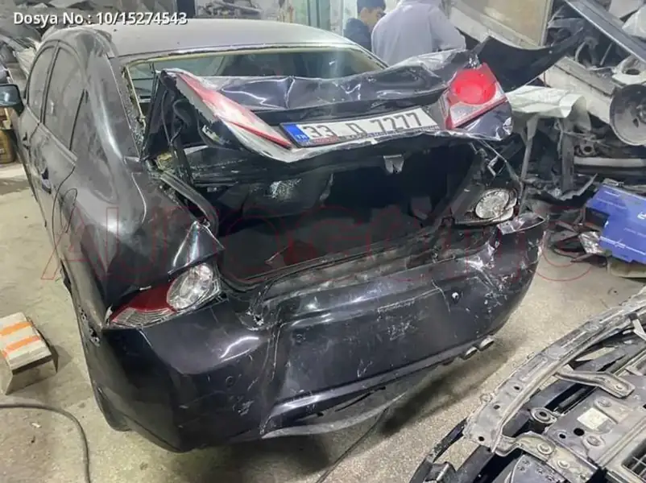
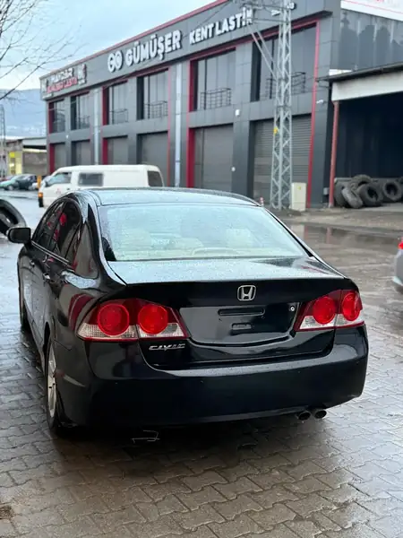
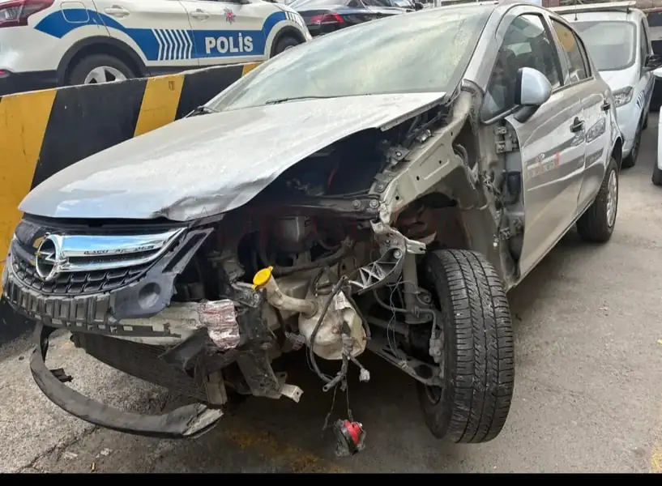
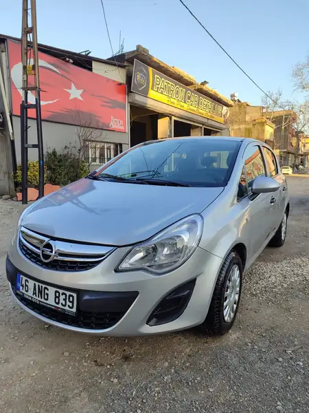
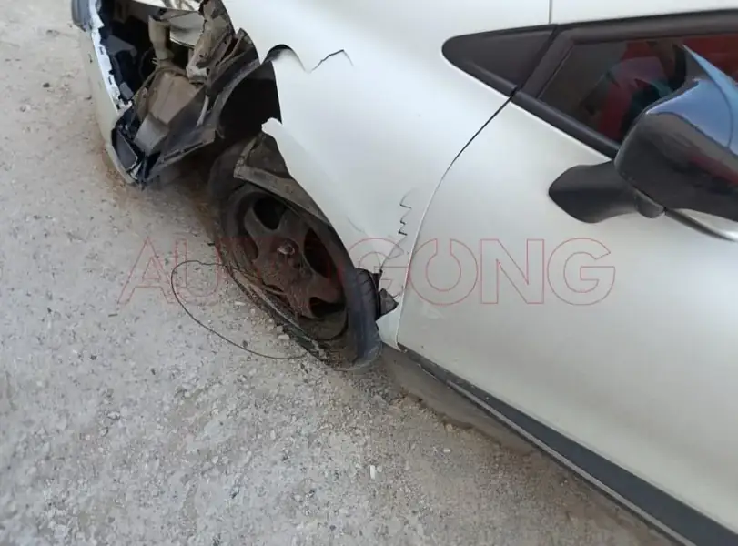
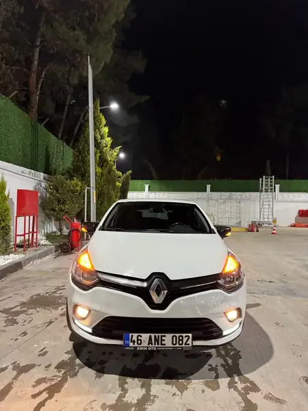
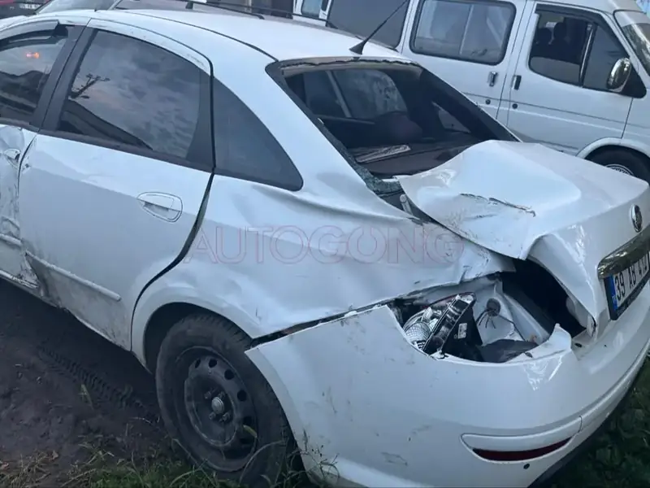
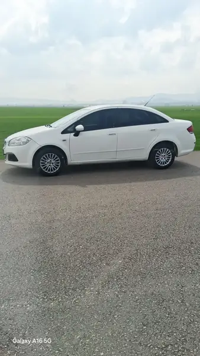
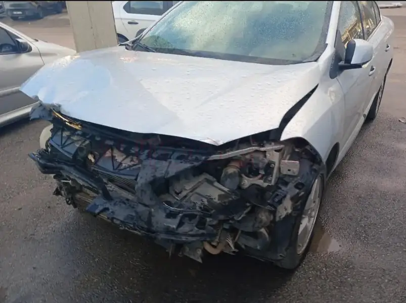
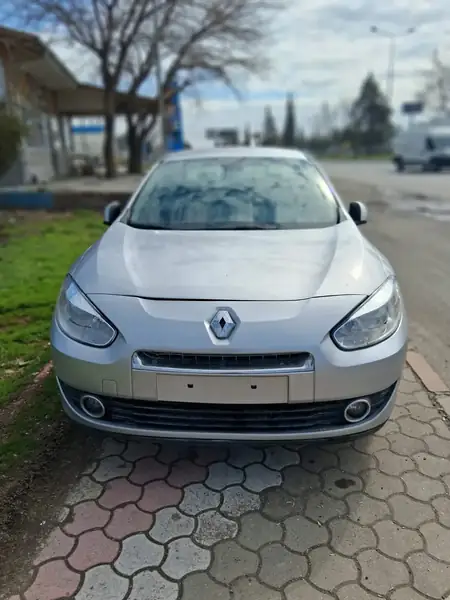

40 yıllık usta tecrübesi, gençliğin dinamizmiyle buluşuyor. Boyasız göçük düzeltme ve fırın boyada profesyonel çözüm.
Orijinal boyayı bozmadan, aracın değerini koruyan hassas düzeltme.
Tozsuz ve steril fırınımızda tam renk uyumlu hatasız boya uygulaması.
Aracınızın rengini canlandıran, koruyucu ve parlak bitişler.
Parça değişimi, parça onarımı ve ağır hasarlı araçların kaporta işleri.
Kazalı araçların şase ayarı ve mekanik kaporta parçalarının onarımı.
Baba Oğul Kaporta, Kahramanmaraş Sanayi Sitesi'nde dürüstlük ve kaliteli işçilik ilkesiyle hizmet vermektedir. Babamızın 40 yıllık tecrübesini, yeni nesil tekniklerle harmanlıyoruz.
Hasarlı araçların kusursuz değişim süreci.

ÖNCESİ
SONRASIArka bagaj ve panel ağır hasar onarımı, orijinal parçalarla fırın boya uygulaması.

ÖNCESİ
SONRASIÖn tampon, far ve çamurluk değişimi ile kusursuz renk uyumlu boya işlemi.

ÖNCESİ
SONRASISol arka çamurluk ve kapı hasarı onarımı, pasta cila ve boya koruma.

ÖNCESİ
SONRASIArka stop lambası çevresi ve çamurluk düzeltme, lokal boya uygulaması.

ÖNCESİ
SONRASIÖn kaput ve panel düzeltme işlemleri ile detaylı kaporta revizyonu.
Adres: Yavuz Selim Mahallesi Küçük Sanayi Sitesi 38.Cadde No:11 Dulkadiroğlu Kahramanmaraş
Telefon: 0545 913 1662
Çalışma Saatleri: Pzt - Cmt / 08:30 - 19:00